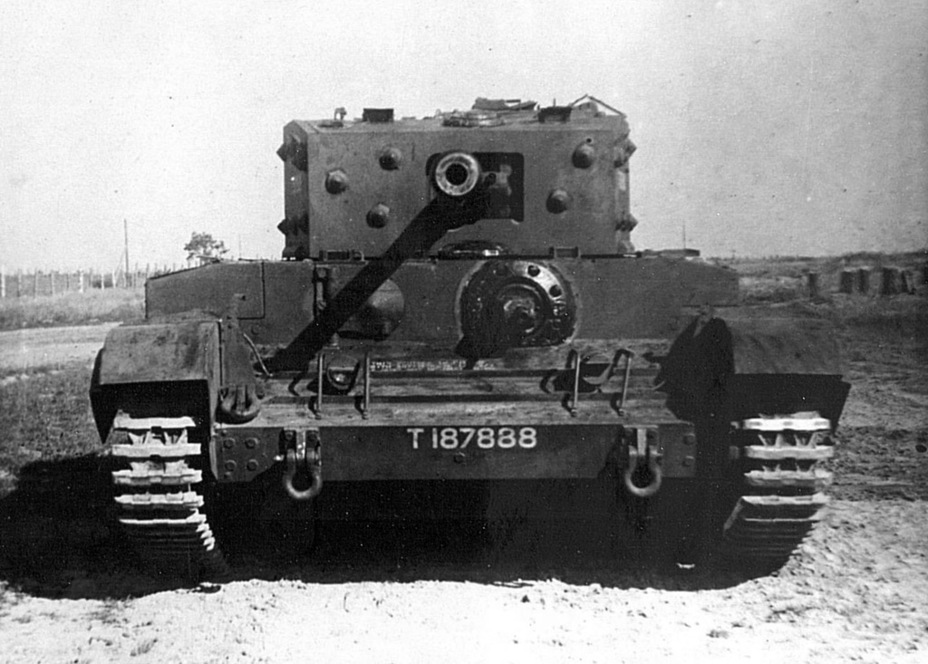

The Cromwell tank otherwise known as Cruiser MkVIII is the most renowned tank of the Cruiser series fielded during World War Two.
It's name sake is Oliver Cromwell who was a military leader from the English Civil War fighting on the victorious Parliamentarians side who eventually ended up as head of state.
There were actually three tanks who initially had the Cromwell name. First was the A24 Cromwell which was developed by Nuffield using the Liberty engine at 410hp, a later revised Liberty Engine designed by Leyland was found unacceptable to be used in A24 leading to a new prototype tank.
The new tank was originally known as A27L Cromwell II but to avoid confusion Cromwell I was renamed to A24 Cavalier.
The confusion didn't end there, because Rolls Royce came up with a new engine known as the Meteor engine which was used in another new prototype known as A27M Cromwell III. This lead to the A27L Cromwell II to get renamed to Centaur to avoid further confusion.
Whilst the A27L used the Meteor engine it was also designed to be able to fit the Liberty engine instead if any problems arose.
| Model Variant | Turret armour thickness | Frontal armour thickness | Top speed |
|---|---|---|---|
| A24 Cromwell I / Cavalier | 76.2mm | 40kmph | |
| A27L Cromwell II / Centaur | 76.2mm | 40kmph | |
| A27M Cromwell III | 76.2mm | 64kmph |
Embedded below is an informative video on the Churchill MkVI and MkVII.
A24 Cromwell/Cavalier tank today
Cromwell tank in WW2